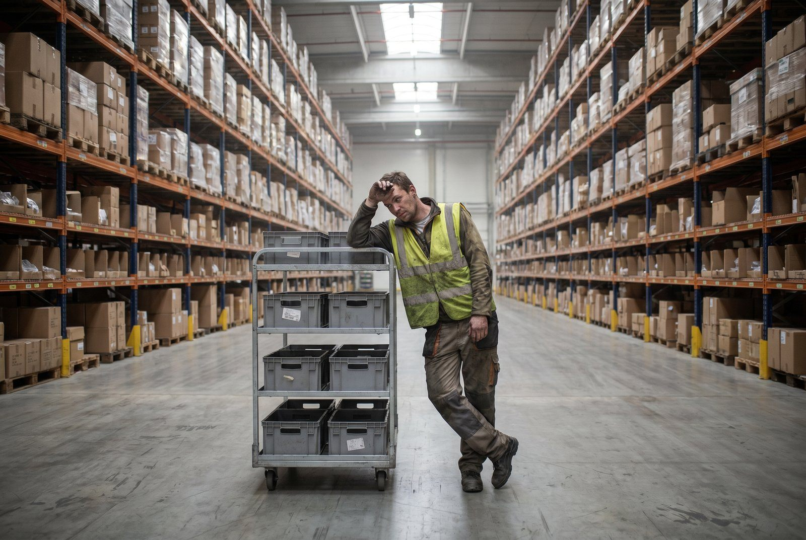

Du betaler for 8 timers arbejde. Hvor mange timer går egentlig til det der faktisk sender ordrer ud af døren?
Den reelle fordeling ser sådan ud, og den er ubehagelig læsning:
Sådan ser en typisk lagerdag ud i praksis
Baseret på dansk e-commerce lager med 200 ordrer om dagen og 4-5 medarbejdere:
| Aktivitet | Andel af tid | Timer/dag (4 mand) | Værdiskabende? |
|---|---|---|---|
| Pluk | 35% | 11,2 timer | Ja |
| Pak | 20% | 6,4 timer | Ja |
| Søge efter varer | 15% | 4,8 timer | Nej |
| Kommunikation og afklaring | 12% | 3,8 timer | Delvist |
| Fejlhåndtering | 10% | 3,2 timer | Nej |
| Returhåndtering | 8% | 2,6 timer | Delvist |
Det vil sige: kun 55% af medarbejdertiden går til det der direkte sender varer ud. Resten er spild, som kan reduceres.
👉 Se hvad du kan gøre ved det nu. Se hvordan SmartPack løser det
Hvad koster 1% tidsbesparelse i kroner?
4 medarbejdere x 8 timer x 300 kr./time = 9.600 kr. per dag i samlede personaleomkostninger.
1% af en lagerdag = 4,8 minutter per medarbejder = 19,2 minutter i alt per dag.
19,2 min x 300 kr./60 min = 96 kr. per dag. Ganget med 250 arbejdsdage = 24.000 kr. om året per procent besparelse.
Søgetid alene er 15% af dagen. Eliminer halvdelen af søgetiden, og du sparer 7,5% = 180.000 kr. om året på fire medarbejdere. Det er en håndgribelig sum for et relativt lille lager.
Top 5 tidstyve på et lager
1. Søgning efter varer (15% af dagen)
Medarbejderne ved ikke nøjagtigt hvor varen er. Systemet siger en ting, hylden siger noget andet. De leder. Det tager tid, og det sker mange gange om dagen. Aarsagen er typisk manglende lokationsstyring og ingen registrering af bevægelser.
2. Plukruter der ikke er optimeret (del af pluk-procenten)
En plukker går frem og tilbage. Krydser egne spor. Starter i den ene ende, bør have startet i den anden. Ingen har beregnet den korteste rute. Det er 20-30% længere end nødvendigt.
3. Fejlhåndtering (10% af dagen)
Forkert vare plukkket. Forkert antal. Vare mangler. Hver fejl fører til en proces: spot den, forsøg at rette den, kontakt kundeservice, genekspeder. En enkelt fejl kan tage 20-45 minutter at håndtere end-to-end.
4. Afklaring og kommunikation (12% af dagen)
"Hvad gør jeg med den her ordre?" "Er den her vare OK at sælge?" "Hvem håndterer returen fra i går?" Mundtlig koordinering er dyr. Den afbryder begge parter og skalerer ikke.
5. Returhåndtering uden procedure (8% af dagen)
Retur ankommer. Ingen ved hvad de skal gøre med den. Den parkeres. En uge senere spørger nogen. Processen genstartes. Uden en klar procedure for modtagelse, vurdering og genopfyldning er returhåndtering dobbelt så dyrt som nødvendigt.
Faktisk vs. ideelt tidsforbrug
Et veloptimeret lager med WMS og gode processer ser således ud:
- Pluk: 45% (mere tid på det der giver værdi)
- Pak: 25%
- Søgning: under 3%
- Kommunikation: 8%
- Fejlhåndtering: 3%
- Retur: 6%
- Andet (modtagelse, genopfyldning): 10%
Det kræver lokationsstyring, ruteoptimering, batch picking og klare procedurer. Opnåeligt på et dansk e-commerce lager inden for 2-3 måneder efter WMS-opsætning.
Hvad SmartPack gør ved de fem tidstyve
Søgning elimineres næsten fuldstændigt fordi systemet sender plukker til nøjagtig lokation med scanner-bekræftelse. Ingen kan gå til forkert hylde uden at systemet registrerer det.
Plukruter optimeres automatisk med A* pathfinding. Korteste rute på tværs af alle aktive ordrer beregnes før plukrunden starter. Batch picking samler 3-5 ordrer, så plukkeren går igennem lageret en gang for flere ordrer frem for flere gange for en ordre.
Fejl falder fordi systemet bekræfter vare og antal ved scanning. Kommunikation falder fordi systemet har svaret på de fleste spørgsmål automatisk. Returhåndtering får en status i systemet fra det øjeblik returen ankommer.